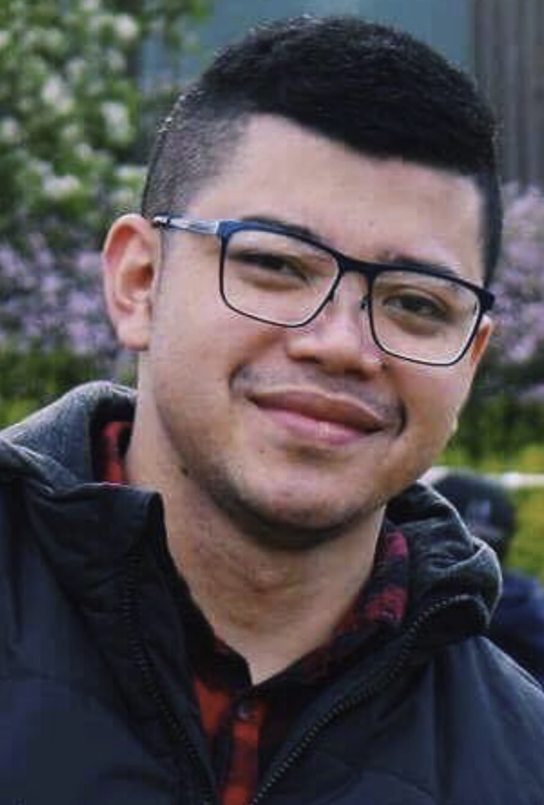

Peter Aird
Student ID: S3910923
I'm Pete from Tassie. I have a beautiful partner, Keryn and a 6 year old son, Flynn, a cat named Spot and a Chocolate Lab Called Coco, and I'm very much a sci-fi junkie. I work part-time for Tassiecare in Disability Support as a Direct Service Coordinator and Tech Support. I also work full-time as a Territory Manager for The Arnott's Group where I lead a small team of three representatives, right across the north of the state. As I'm managed out of NSW, I do a lot of zoom meetings, work with Microsoft Office and Salesforce. I'm a part of the field tech team and have already helped roll out different tech projects across Australia and New Zealand.

Jenaya Du Toit
Student ID: S3909598
I was born in Margaret River, Western Australia and moved to Melbourne in 2015. I have three dogs and a husband. My passions are animals (rights and welfare) and writing; creative and screenplays. I am a qualified dog trainer and founded an animal rescue not-for-profit in 2008. I have basic coding skills and am just starting on my IT journey but have created a student website in the past few years and recently learned some GitHub skills and created another website using basic html and CSS. I am interested in learning how to use technology to create positive change in the world.

Meagan Sharman
Student ID:S3905319
I live in regional Victoria in a house with a very large garden, some chickens, two dogs and two cats. I have been actively involved in many community groups since 2010 in the town where I live including the local arts group and craft groups. I have been playing ukulele in a group of about 30 players for about two years and have just started to learn to play the guitar. I have a keen interest in drawing and watercolor painting and reading very long series of fantasy novels. My interest in IT is started because of my love of playing video games, especially the Legend of Zelda. My IT skills are basic coding of websites and a keen interest in learning animation and illustration for gaming.

Rubert Rubenencia
Student ID:S3894026
I have a passion for digital, specifically finding ways to utilize data to customize and enhance experience. I believe that if you are not failing from time to time, you are not being innovative enough. Outside of my work and spending time with my beautiful wife and soon to be 5 Son, I love sports and I am passionate anything Australia!
Language Skills: English, Tagalog, Bisaya and Waray
Jaejun Oh
Student ID:S3905545
I am currently living in South Korea but studying in RMIT via OUA. My first experience in distance learning was in 2019 where I enrolled into an online year 11 course in Launceston, Tasmania. Afterwards, I had an opportunity to travel overseas and study in the actual school. After completion of year 12 in 2020, I have decided to make my first step on IT with RMIT. I have been practicing guitar for couple of years. It really helps me to control my mood. My first interest in IT developed since I researched about Artificial Intelligence and its capabilities. I do not have enough prior experience in IT, but I am willing to learn more as I study with this course.